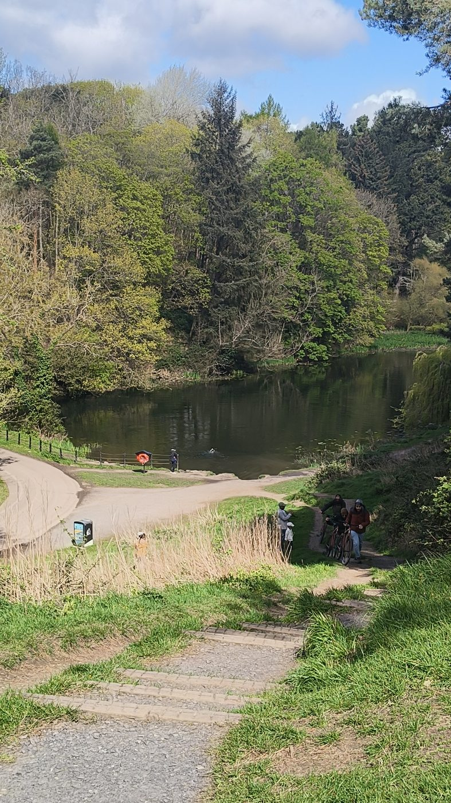
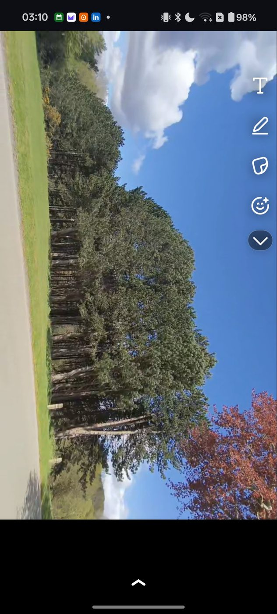

Skills and projects tell you what I can do. This page tells you who I am when I'm not in front of a screen.
I'm Aston Tellis — a CS and Business student who genuinely enjoys the work. Not just because it opens doors, but because I find the intersection of technology, data, and human behaviour interesting.
Outside of studying and building projects, I spend a lot of time outdoors. I take photos of the places I walk through — not with expensive equipment, just a phone and an eye for a good moment. Nature has a way of resetting your thinking that no productivity app has managed to replicate.
I'm the kind of person who goes down rabbit holes. I'll read about a topic for hours not because I need to, but because I want to understand it properly. That's led me to everything from digital privacy and surveillance architecture to financial systems, open source philosophy, and how cities are designed.
I believe being a well-rounded person makes you a better professional. Curiosity, patience, and the ability to sit with uncertainty — those aren't soft skills, they're the core ones.
Places I've walked through and thought were worth remembering. All shot on a phone — no filters, no editing.


Things I've picked up because they interested me — not because they were on a syllabus. Not necessarily job-relevant, but they say something about how I learn.
I'm genuinely open to learning anything that makes me more useful, more curious, or more capable. If you've come across something interesting — a tool, a concept, a field, a book — I'd love to hear about it. The best suggestions I've ever received came from unexpected conversations.
I'm currently exploring Python for data, Power BI, privacy engineering, and open source finance tools. But I'm not attached to any particular roadmap — I follow what's genuinely interesting and what has real application.
Have a suggestion? Something you think I should explore? → Get in touch